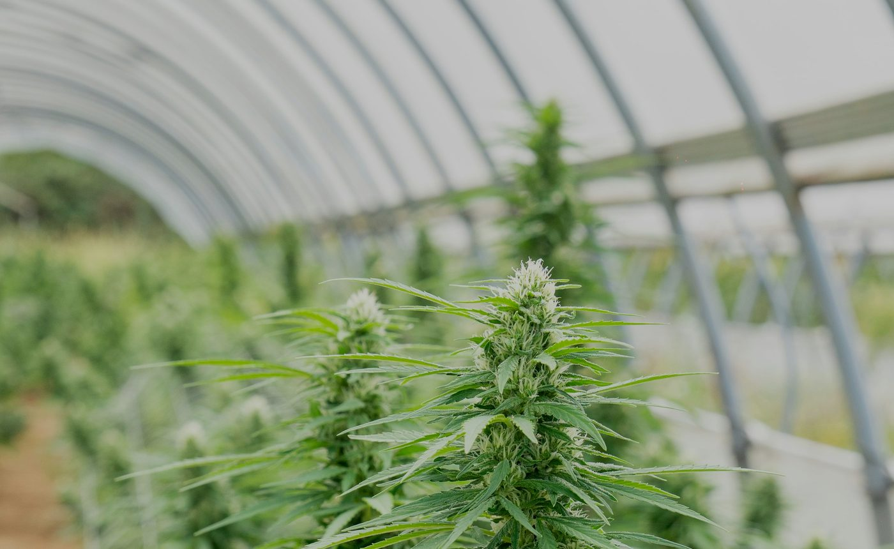

Del primer riego al último frasco: simulá, registrá y entendé cada decisión. Con la biblioteca de tus diplomaturas siempre a mano.
91% salud media74 días restantes0 cosechas
IMAGEN · UNSPLASH
✳
PLANTAS ACTIVAS9/ 9 legales
▦
BIBLIOTECA28recursos
6 DIPLOMATURAS
◫
COSTO DE TEMPORADA$406.890ARS
$822 / g
◈
CONSULTAS AL ORÁCULO0registradas
LOCAL
COLECCIÓN
Tu genética, en foco.
DIARIO DE CULTIVO
La temporada, semana a semana
◈ORÁCULO VERDEPreguntale a tu biblioteca.IA
Respuestas trazables, extraídas de tus diplomaturas. Sin inventar fuentes.
“¿Cuándo conviene cosechar una autofloreciente?”
RECIÉN INDEXADO
De tus diplomaturas
INSIGHT AUTOMÁTICO
Lo que se repite
5
Hay 12 recursos duplicados entre diplomaturas. Verde los vincula sin borrar el original: sabés de dónde viene cada versión.
CATÁLOGO /14 AUTOFLORECIENTES
El catálogo, curado.
Perfiles, terpenos, efectos y tiempos reales de cultivo. Toda ficha es una síntesis educativa: contrastá siempre con la información del banco de semillas.
14 cepasFácil Media Alta
DIARIO /75 DÍAS · 11 SEMANAS
La temporada, semana a semana.
El registro que convierte una cosecha en aprendizaje: ambiente, tareas, decisiones y resultado final. Cada semana conserva su contexto.

SEMANA EN CURSO
Semana 1 · Plántula
Nueve semillas, un sustrato y una regla simple: observar antes de intervenir.
Día 1 de 7524 °C media62% humedad
S1EN CURSO
SEMANA 01 · DÍAS 1–7
La siembra
PLÁNTULA
AMBIENTE REGISTRADO
TemperaturaHumedadVPD
SIMULADOR /15 M² · 9 AUTOS
Tu pequeño ecosistema.
Una rutina diaria, un presupuesto real y decisiones que dejan huella. Avanzá rápido cuando ya sepas qué hacer.
DÍA DE CULTIVO01/ 75
PLÁNTULA21 MAR · 08:00
SEMANA01
COSECHAS0
GASTO ACUMULADO$0
PRÓXIMO HITODía 12 · Crecimiento
VISTA EN VIVO
Invernadero / 3 × 5 m
SaludableRevisarCosechada
◉ SENSOR AMBIENTALCONDICIONES ESTABLES
LUZ LED · 18 H
VENTILACIÓN
3 m
5 m
ACCIONES DEL DÍA
Cuida tu cultivo
Seleccioná una planta · cada acción descuenta recursos
✦Consejo del díaRevisá el sustrato antes de regar. Un exceso de agua también estresa.
BIBLIOTECA /ÍNDICE MAESTRO · DATASET DEMO
Tu conocimiento, puesto en orden.
Cada PDF conserva su origen: diplomatura, módulo y carpeta. Los repetidos se agrupan para que puedas compararlos, no volver a estudiarlos.
RECURSOS INDEXADOS28
DIPLOMATURAS6
PROCESADOS A MARKDOWN12
GRUPOS DUPLICADOS5
ÍNDICE COMPARTIDOv0.828 de 28 ubicaciones verificadas
⧉
Contenido repetido, contexto distinto.
12 recursos aparecen en más de una diplomatura. Verde los vincula sin borrar el original: sabés de dónde viene cada versión y dónde está guardada.
28 recursos Origen verificado
Sin resultados.
Probá con otra búsqueda o quitá los filtros.
ORÁCULO IA /RESPUESTAS CON FUENTES
Preguntá. Tu biblioteca responde.
Un asistente que cruza tus diplomaturas, señala acuerdos y contradicciones, y te devuelve el fragmento exacto para que lo verifiques.
◈
MODO LOCAL · DEMO28 fuentes disponiblesSin enviar tus PDFs a terceros
◈Oráculo Verde listo · responde sobre 6 diplomaturas
Las respuestas son orientativas y citan material de tu biblioteca. No reemplazan asesoramiento profesional ni la normativa vigente.
COSTOS /ARS · 2026
Sabé cuánto cuesta cultivar de verdad.
Costos de una temporada legal de 9 autos en 15 m². Ajustá tus supuestos y mirá el impacto en el costo por gramo.
SUPUESTOS EDITABLES
Armá tu escenario
AUTO · INDOOR
Plantas en floración9 / 9
19 · límite legal
Rendimiento por planta55 g
20 g120 g · optimizado
Precio de referencia$4.500 / g
$1.500$9.000
ⓘ
Supuestos base: carpa 3 × 5, sustrato reutilizado al 50%, semillas automáticas premium y 9 macetas de 11 L. Los valores son editables y no incluyen costo de trámite registral.
⚖
Dentro del marco de autocultivo
9 plantas · 15 m² · Argentina 2026. La escala mayor se proyecta aparte como ejercicio, no como recomendación legal.
COSTO TOTAL DE LA TEMPORADAARS 2026
406.890
Costo por planta $45.210·Costo por gramo $822
Valor estimado de la cosecha$2.227.500+433%
DISTRIBUCIÓN
En qué se va el dinero
ARS
PROYECCIÓN
Si el proyecto crece
EJERCICIO
El mismo costo por planta aplicado a escala permite comparar economías. La escala grande requiere habilitaciones, trazabilidad y estructura productiva.
ESCALAINVERSIÓNCOSTO/GESTADO
9 plantasAutocultivo$406.890$822HABILITADO
90 plantasMicro-proyecto$4.180.000$822EVALUAR
900 plantasProductor$41.800.000$822FUERA DE MARCO
Ahorro potencial por escala −18%· requiere inversión y habilitación
PROCESO /AUTOFLORECIENTES · 75 DÍAS
El cultivo completo, sin saltarte nada.
Una guía operativa de principio a fin: qué observar, qué hacer y cuánto cuesta en cada etapa. Marcá tus tareas y seguí el avance.
PROGRESO DE TAREAS0 / 20 tareas
INVERSIÓN ACUMULADA$0de $406.890 estimados
RIESGO PRINCIPALExceso de riego3 de 4 alertas del oráculo
MARCO LEGALREPROCANNVerificá tu registro anual
MÁS HERRAMIENTAS
Autocultivo registrado · 15 m² · 9 plantas · Argentina 2026
GUÍA DE CAMPO
Un ecosistema en equilibrio.
Tu invernadero funciona como un pequeño sistema vivo. Las condiciones cambian con el paso de los días: observá antes de actuar y evitá corregir demasiado de golpe.
01
Observá cada planta. Seleccioná una maceta para revisar su etapa, vitalidad y humedad.
02
Cuidados con medida. Regar o nutrir ayuda si la planta lo necesita. El exceso también genera estrés.
03
Gestioná tus reservas. Reponé agua, insumos o energía con el botón + de Recursos.
04
Aprendé de la biblioteca. Cada recomendación del simulador está vinculada a material de tus diplomaturas.
05
Acelerá cuando sepas. La simulación veloz corre la temporada completa con una estrategia y te muestra el resultado.
TIENDA DE SUMINISTROS
Reponer recursos.
Una pequeña inversión para mantener el invernadero en marcha. Los gastos se suman al presupuesto de la temporada.
FONDO DE TEMPORADA $48.000
SIMULACIÓN VELOZ · 75 DÍAS
Corré la temporada completa.
El simulador aplicará una rutina diaria automática, resolverá los eventos y te devolverá un resumen de cosecha y presupuesto.
⚡Simula los días restantes hasta el día 75. No modifica tu partida hasta que confirmes.
RESULTADO DE TEMPORADA
Cosecha completada.
COSECHA TOTAL—
COSTO ESTIMADO—
COSTO POR GRAMO—
PLANTAS SANAS—
APORTAR A LA BIBLIOTECA
Sumá un PDF con su origen.
El archivo queda pendiente de procesamiento. Guardamos la diplomatura y la carpeta para que nunca pierda contexto.